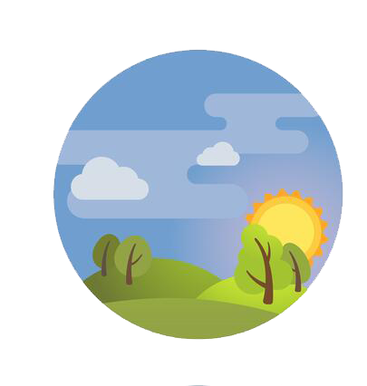
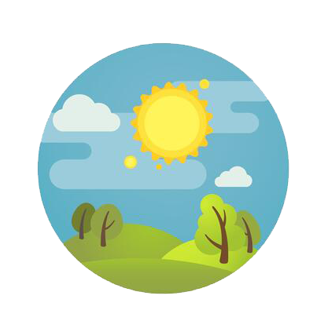
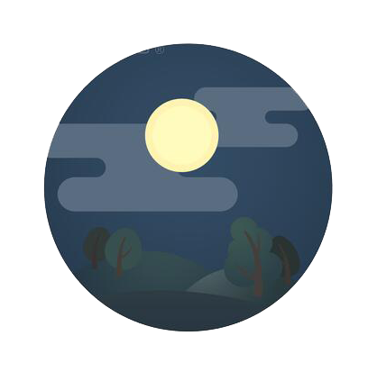

بهترین وقت برای مطالعه چه زمانی است؟
بر اساس تحقیقات علمی انجام شده بروی این موضوع به زمان بندی خوب برای مطالعه کرونوبیولوژی گفته میشود و اوج عملکرد یادگیری ما به دی ان ای ما بستگی دارد. این بدان معناست که هر شخصی ساعت بیولوژیکی متفاوتی نسبت به دیگر افراد داشته ودر زمان های متفاوتی میتواند از اوج بهره وری ذهنی خود استفاده کند. شما ممکن است فردی سحرخیز باشید که هنگام صبح تمایل به مطالعه و یادگیری بیشتر دارید و یا ممکن است در سکوت و آرامش شب اقدام به مطالعه کردن نمایید. ما در این مقاله به توضیح مزایا و ویژگی های مطالعه در هر بخش روز میپردازیم.
برخی افراد معتقدند صبح بهترین زمان مطالعه است زیرا در صبح مغز سرحال بوده و هیچگونه خستگی ندارد چون در طول شب به خوبی استراحت کرده و خستگی ذهن به خوبی دفع شده است.
به همین دلیل مغز آمادگی یادگیری مطالب جدید را دارد و هر مطلبی که در صبح فرا گرفته شود بخوبی در ذهن باقی خواهد ماند.
اگر مطالعه در صبح را ترجیح میدهید بهترین پیشنهاد برای شما این است که حتما بعد از خوردن یک وعده صبحانه مقوی به سراغ مطالعه و یادگیری بروید.

{اینجا ببینید: خوراکی های مقوی برا مغز}
همچنین مطالعه در طول روز به ویژه صبح یک مزیت دیگر دارد که آن طبیعی بودن نور اطراف است. در طول روز با وجود نور خورشید دیگر احتیاجی به روشن کردن نور های مصنوعی نیست و این موضوع از دو جهت به نفع ماست. یک اینکه کیفیت دید ما در زمان استفاده از نور خورشید خیلی بهتر از نور های مصنوعی است و دوم اینکه مغز ما در زیر نور طبیعی هشیار تر عمل میکند و این موضوع تا سطح زیادی بروی یادگیری ما تاثیر میگذارد.
برای برخی مطالعه در بعد از ظهر میتواند زمان خوبی باشد اما باید حتما فاصله ای حداقل ۳۰ دقیقه ای بین زمان صرف ناهار و درس خواندن گذاشت زیرا مطالعه با شکم پر تاثیر زیادی ندارد و گاهی میتواند موجب خواب آلودگی شود. همچنین در نظر گرفتن زمان کوتاهی برای چرت زدن در بعد از ظهر میتواند مارا از عملکرد ذهنی بهتری برخوردار کند. یک نکته ی دیگر این است که ساعت ۳ بعد از ظهر حافظه بلند مدت شما در بهترین حالت خود قرار دارد پس اگر دروس مهمی دارید که میخواهید حتما به خاطر بسپارید در این ساعت اقدام به مرور آن کنید.
حتما شنیده اید که بسیاری مطالعه در شب را پیشنهاد میکنند. این به سبب آن است که ما بعد از مطالعه در شب به خواب می رویم و ذهن علاوه بر استراحت فرصت بسیار خوبی برای تحلیل و تجزیه مطالب دارد در نتیجه مطالبی را که قبل از خواب مطالعه کردیم صبح روز بعد بخوبی بخاطرمی آوریم. البته این اتفاق وقتی می افتد که بین ۸ تا ۹ ساعت خواب خوب داشته باشیم. مزیتی دیگر وجود سکوت و آرامش در هنگام شب است. در این وقت افراد آرام تر هستند و بیشتر از ساعات دیگر به تفکر می پردازند همچنین حواس پرتی کمتری در شب وجود دارد به همین دلیل میتوانید از وقت خود در شب استفاده کنید و مطالعه ی موثرتری داشته باشید.
در این مطلب سعی کردیم مزایای مطالعه در هر وقت شبانه روز را ذکر کنیم و یادآور میشویم که زمان مشخصی برای مطالعه وجود ندارد که برای همه ی افراد کارساز باشد. اگرچه زمان مطالعه فاکتور مهمی در بهبود کیفیت آن است اما روش مطالعه و یادگیری افراد هم نقش به سزایی در این موضوع ایفا میکنند. حالا که مزیت مطالعه در هروقت را میدانید قدمی جلوتر بردارید و با خود فکر کنید که در چه زمانی از روز میل بیشتری به مطالعه دارید؟ در چه وقت از روز احساس هوشیاری بیشتری میکنید؟ برای شروع ساعاتی را برای مطالعه در نظر بگیرید. یادتان باشد که اختصاص دادن و پیدا کردن یک وقت مناسب برای مطالعه همانند هرکار دیگری نیازمند صبر و تمرین است. پس اگر بدنبال مطالعه ی مفیدتری هستید از این قدم غافل نشوید.